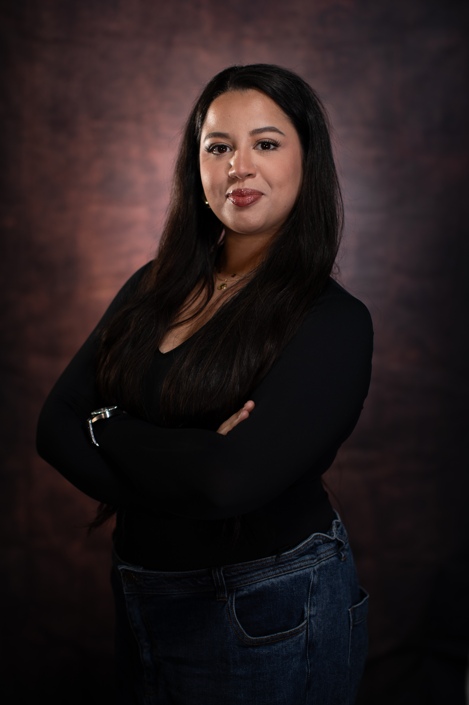

Recherche alternance BTS SIO option SISR
Salwa FATMI
Pendant mes années de licence PCSI, j'ai découvert ma passion pour les réseaux et les infrastructures IT. J'ai rapidement développé un intérêt pour le support technique, appréciant le fait de résoudre des problèmes et d'assurer le bon fonctionnement des systèmes. Cette passion m'a poussé à approfondir mes connaissances dans ce domaine. Actuellement en BTS SIO option SISR à l'AFIP Formation, je suis en recherche d'alternance en tant que technicienne informatique.
- fatmi.salwa17@gmail.com
- Lyon, 69000
- Permis de conduire
- Mobilité
- 07 45 92 08 90
Diplômes et Formations
|
Compétences
Langues
|
Expériences Professionnelles
|
Savoir-être
Centres d'Intérêt
|